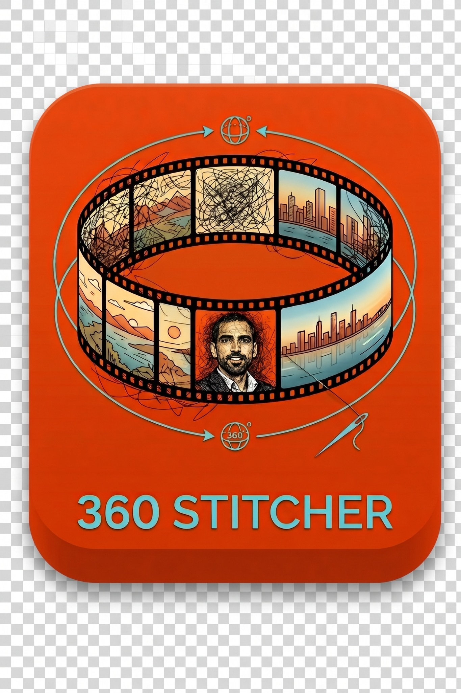

360 Stitcher
Turn DJI Mavic panorama source photos into an aligned 360 image. Inspect the result in the built-in viewer and export JPG, PNG, or TIFF.
Download for WindowsSource code
Developed by Ahmad Alhasanat. Processing runs locally on your computer. An unphotographed sky or missing source images cannot be reconstructed by the stitcher.
Windows 10/11 · The download is a ZIP containing 360Stitcher.exe.